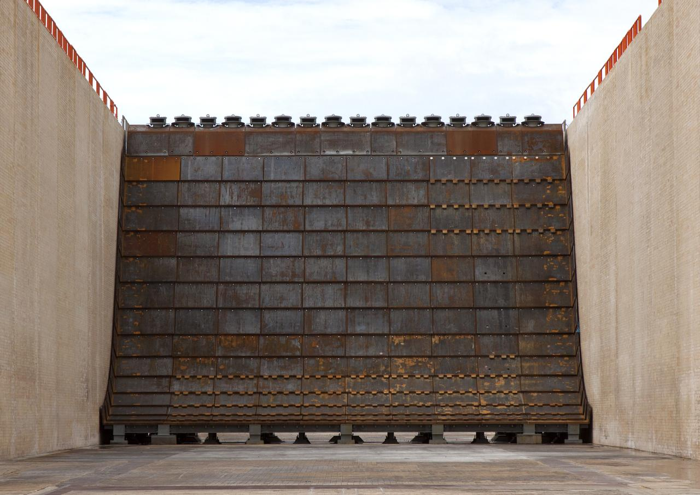
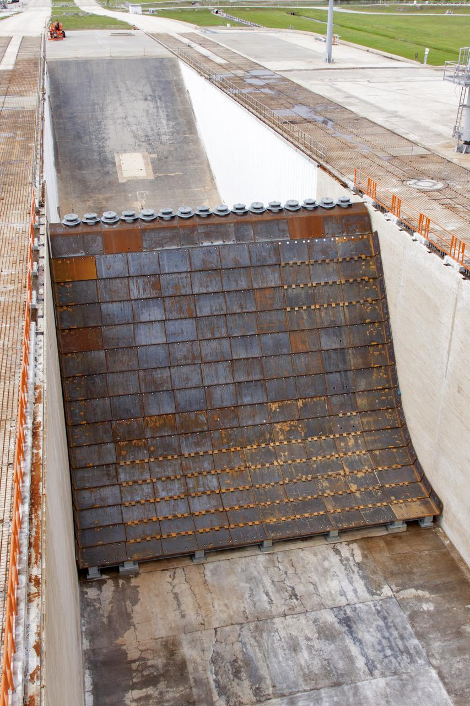

Zrównoważony rozwój i środowisko
Notatka raportu "Orbitalne centra danych". Kluczowe źródła: źródło 1, źródło 2.
W skrócie
Argument środowiskowy jest dwustronnym ostrzem i to czyni go ryzykiem inwestycyjnym, a nie czystą zaletą. Firmy budujące orbitalne centra danych (Starcloud, Thales Alenia Space/ASCEND) sprzedają inwestorom narrację o energii słonecznej dostępnej 24/7, zerowym zużyciu wody i braku konkurencji o grunt - i te punkty mają oparcie w deklaracjach oraz w danych o rosnącej presji wodnej naziemnych centrów danych. Po stronie kosztów stoją jednak twarde, recenzowane dane: starty rakiet wstrzykują do stratosfery setki ton sadzy i tlenku glinu (910 ton aluminy w 2019 r.) , a spalanie modułów przy powrocie do atmosfery (reentry) może do 2040 r. deponować 10 000 ton aluminy rocznie w scenariuszu 60 000 satelitów . Kluczowa luka dla inwestora: nie istnieje publiczne, pełne LCA orbitalnego centrum danych z jedną granicą systemową - dlatego twierdzenie "korzystne dla klimatu" pozostaje NIEZWERYFIKOWANE, a regulacyjne ryzyko ozonowe i debris jest realne i rosnące. Kto zyskuje: dostawcy "czystych" rakiet i operatorzy w regionach z deficytem wody/energii; kto traci: projekty oparte na rakietach węglowodorowych przy zaostrzeniu przepisów o emisjach stratosferycznych.
Powiązane wątki
Mapa powiązań tematycznych - jak ten wątek łączy się z resztą raportu.
- Naziemny bottleneck - woda, grunt i energia to wspólna oś środowiskowa
- Regulacje i debris - debris i Kessler jako środowiskowy koszt orbity
- Sentyment i moratoria - argument ESG spina środowisko z akceptacją społeczną
- Energetyka kosmiczna - carbon intensity solar orbital vs naziemny miks
- Fizyka orbitalna - reentry i burn-up przy deorbitacji modułów
Emisje startów rakietowych: CO2, sadza, alumina, ozon
Podstawowy inwentarz emisji pochodzi z recenzowanej pracy Brown et al. (Earth and Space Science / arXiv, narzędzie ORACLE). Starty rakiet w 2019 r. wyemitowały do stratosfery (warstwy atmosfery ~12-50 km, kluczowej dla ochronnej powłoki ozonowej): 5 820 ton CO2, 6 380 ton pary wodnej (H2O), 280 ton black carbon (sadzy - drobnych cząstek węgla z niepełnego spalania), 220 ton tlenków azotu, 500 ton reaktywnego chloru oraz 910 ton aluminy (Al2O3, tlenku glinu) Brown et al.. Sama liczba CO2 jest niewielka wobec globalnej gospodarki, ale problemem jest miejsce wstrzyknięcia i rodzaj cząstek.
xychart-beta
title "Emisje startow do stratosfery 2019 (tony)"
x-axis ["H2O", "CO2", "Reaktywny Cl", "Alumina", "Black carbon", "NOx"]
y-axis "tony/rok" 0 --> 7000
bar [6380, 5820, 500, 910, 280, 220]
Rys. 75 - Inwentarz emisji startów rakietowych wstrzykniętych do stratosfery w 2019 r. (sadza i alumina mają nieproporcjonalny wpływ klimatyczno-ozonowy mimo małej masy). Dane: Brown et al. / ORACLE (arXiv 2504.15291).

Rys. 76 - Srodowisko: Flame Deflector Complete at Launch Complex 39B. Źródło: NASA, licencja: public domain.
#grafika #zrownowazony-rozwoj-i-srodowisko #emisje #start

Rys. 77 - Srodowisko: Flame Deflector Complete at Launch Complex 39B. Źródło: NASA, licencja: public domain.
#grafika #zrownowazony-rozwoj-i-srodowisko #emisje #start
Najważniejszy parametr: sadza rakietowa jest do 500 razy bardziej efektywna w ogrzewaniu atmosfery niż sadza z powierzchni Ziemi i lotnictwa Brown et al., bo trafia bezpośrednio do stratosfery, gdzie utrzymuje się długo (szacowana persistencja 1,4-3,8 roku) GreenLaunch. Modelowanie wskazuje, że roczna kadencja 1 000 startów węglowodorowych mogłaby w ciągu dekady wywołać wymuszenie radiacyjne (radiative forcing - dodatkowe ocieplenie netto mierzone w mW/m2) porównywalne z całym globalnym lotnictwem poddźwiękowym, dokładając 7,9 mW/m2 i podwajając efekt obecnych rakiet w trzy lata Brown et al..
Wpływ na ozon (mierzony w jednostkach Dobsona, DU - grubości warstwy ozonu): rakiety wodorowe wielokrotnego użytku mogą zwiększyć stratosferyczną parę wodną o ~10% i obniżyć globalną kolumnę ozonu o 1,4-1,5 DU Brown et al.. Przy kadencjach startów potrzebnych do rozmieszczenia ponad 100 000 satelitów do 2050 r. straty ozonu mogłyby sięgnąć 6% obecnego rocznego globalnego ubytku Brown et al.. Słabsze źródło branżowe podaje scenariusz 10 Gg/rok sadzy dający ocieplenie stratosfery do 1,5 K i utratę ozonu 16 DU (4%) na półkuli północnej GreenLaunch.
Per pojedynczy start (źródła słabe): FAA szacuje 387 ton CO2e na start Falcon 9 (z 23 226 ton dla 60 startów), a Starship ~3 491 ton CO2e na start (z 83 794 ton dla 24 startów) GreenLaunch. Implikacja dla inwestora: model biznesowy oparty na masowych startach metanowych/kerozynowych niesie ekspozycję na przyszłą regulację emisji stratosferycznych; intensywność emisji przeliczona na kWh dostarczonej mocy obliczeniowej jest tu NIE UJAWNIONE (brak jednolitego współczynnika; dostępne tylko emisje całkowite na start).
Lifecycle / embodied carbon: platforma orbitalna vs naziemne DC
Analiza cyklu życia (LCA - rachunek emisji "od kołyski do grobu") konstelacji według ORACLE pokazuje, że produkcja rakiet i spalanie paliwa podczas startów odpowiadają za 72,6% emisji cyklu życia Brown et al.. To przesuwa cały ciężar środowiskowy na fazę wynoszenia, nie operacji. Dźwignią jest wielokrotny użytek: rakiety wielorazowe (Falcon 9, Starship) mają 95,4% niższe emisje produkcji niż jednorazowe Brown et al..
Strona promotorów: studium ASCEND (Thales Alenia Space, Horizon Europe) stwierdza, że taka infrastruktura wymagałaby opracowania rakiety 10 razy mniej emisyjnej w całym cyklu życia Thales Alenia Space. ASCEND celuje w 1 GW orbitalnej mocy przed 2050 r. wobec szacowanego europejskiego rynku centrów danych 23 GW do 2030 r. Thales Alenia Space. Implikacja: korzyść klimatyczna jest warunkowa - zależy od rakiety, której jeszcze nie ma.
Strona kosztowa Starcloud (whitepaper, tier weak): firma porównuje klaster 40 MW przez 10 lat - bilans kosztowy 8,2 mln USD w kosmosie vs 167 mln USD na Ziemi Starcloud, przy założeniu kosztu startu 30 USD/kg (vs aktualne ~1 520 USD/kg na Falcon Heavy DCD). Starcloud zakłada, że jeden start Starship wynosi ~40 MW mocy obliczeniowej (przy 120 kW/szafę) i że 5 GW dałoby się rozmieścić w mniej niż 100 startach Starcloud. Sceptyczna analiza kontruje, że 40 MW wymaga nie jednego, lecz do 22 startów angadh.com. Implikacja: założenie 30 USD/kg jest ~50x niższe od obecnej rzeczywistości, więc cały bilans embodied carbon i kosztu zależy od jeszcze nieudowodnionej dźwigni cenowej. Wskaźnik kg CO2e/kg masy na orbitę dla konkretnego orbitalnego DC jest NIE UJAWNIONE (publiczne LCA dotyczą konstelacji Starlink/Kuiper, nie centrów danych).
Brak zużycia wody i gruntu na orbicie
To najmocniejszy punkt narracji środowiskowej. ASCEND deklaruje, że orbitalne centra danych nie wymagają wody do chłodzenia - przewaga w czasach narastających susz Thales Alenia Space. Starcloud podaje 0 L/kWh w kosmosie wobec 1,7 mln ton wody dla klastra 40 MW na lądzie przez 10 lat Starcloud.
Kontekst naziemny (WUE - Water Usage Effectiveness, litry wody na kWh): branżowa średnia ~1,8-1,9 L/kWh Moduledge, ale najlepsi operatorzy są znacznie niżej. Według raportu EUDCA State of European Data Centres 2025 europejska kolokacja ma średnio 0,31 L/kWh, Microsoft globalnie 0,3 L/kWh, a Amazon 0,15 L/kWh w 2024 r. EUDCA. Implikacja dla inwestora: przewaga "zero wody" jest realna względem złych obiektów na pustyni, ale wobec najlepszej naziemnej kolokacji (0,15-0,31 L/kWh) różnica jest mniejsza niż sugeruje średnia branżowa - argument ma wartość głównie tam, gdzie woda jest deficytem regulacyjnym. Oszczędność gruntu w m2/MW dla orbitalnego DC jest NIE UJAWNIONE; możliwe proxy to gęstość mocy naziemnego hiperskalera ~1 600 W/m2.
xychart-beta
title "Zuzycie wody WUE: orbital vs naziemne (L/kWh)"
x-axis ["Orbital", "Amazon 2024", "Microsoft 2024", "Kolokacja UE", "Srednia branzy"]
y-axis "L/kWh" 0 --> 2
bar [0, 0.15, 0.3, 0.31, 1.85]
Rys. 78 - Wskaźnik zużycia wody (WUE): przewaga "zero wody" jest realna wobec średniej branżowej, ale niewielka wobec najlepszej naziemnej kolokacji. Dane: Starcloud/ASCEND, EUDCA 2025, Moduledge.
Zanieczyszczenie z reentry / burn-up przy deorbitacji modułów
To najsłabiej wyceniany koszt środowiskowy, oparty na mocnych źródłach primary. Spalenie typowego satelity 250 kg generuje ~30 kg nanocząstek tlenku glinu, mogących utrzymywać się dekady Ferreira et al., GRL. Strumień aluminium na szczycie atmosfery (TOA) z satelitów wzrósł z 5,36 ton w 2016 r. (3,8% nadwyżki nad źródłami naturalnymi) do 41,7 ton w 2022 r. (nadwyżka 29,5%); związków tlenku glinu - z 2,13 do 16,6 ton, ośmiokrotny wzrost Ferreira et al.. W scenariuszu megakonstelacji byłoby to 362,7 ton związków Al2O3 rocznie i 912 ton TOA aluminium rocznie (nadwyżka 646% nad naturalnym) Ferreira et al.. Cząstki te mogą zajmować do 30 lat zanim opadną z mezosfery do warstwy ozonowej Ferreira et al..
xychart-beta
title "Strumien aluminium z reentry (TOA, tony/rok)"
x-axis ["2016", "2022", "Megakonstelacje"]
y-axis "tony/rok" 0 --> 1000
bar [5.36, 41.7, 912]
Rys. 79 - Strumień aluminium na szczycie atmosfery (TOA) z reentry satelitów - wzrost z 2016 r. do scenariusza megakonstelacji (nadwyżka 646% nad źródłami naturalnymi). Dane: Ferreira et al., GRL 2024.
Dowód obecności: badanie Murphy et al. (PNAS 2023) wykazało, że ~10% stratosferycznych cząstek kwasu siarkowego >120 nm zawiera aluminium i inne pierwiastki z reentry, wykryto >20 pierwiastków w proporcjach zgodnych ze stopami statków kosmicznych, a planowane wzrosty mogą podnieść ten udział do 50% Murphy et al.. Analiza MIT szacuje antropogeniczny strumień Al z reentry na ~161% strumienia meteorytowego MIT. NOAA prognozuje, że przy 60 000 satelitów LEO do 2040 r. (satelita spalany co 1-2 dni) deponowane będzie 10 000 ton aluminy rocznie, co mogłoby ogrzać części mezosfery nawet o 1,5 stopnia Celsjusza i wpłynąć na ozon NOAA. Już w 2024 r. powracało 1 200 nienaruszonych obiektów ESA SER, średnio ponad 3 razy dziennie UN-SPIDER. Implikacja: orbitalne DC z założenia "spalają się w atmosferze" przy końcu życia (Starcloud-1 spłonie po deorbitacji z 325 km), więc duże moduły są aktywnym wkładem w to zanieczyszczenie - ryzyko regulacyjne i reputacyjne. Skład gazowy (NOx, Cl, HCl) z deorbitacji dużych modułów (>100 t) jest NIE UJAWNIONE.
Carbon intensity: solar orbital vs naziemny mix vs PPA OZE
Punkt odniesienia naziemny (recenzowane dane Harvard/Guidi et al.): amerykańskie centra danych o wysokiej gęstości (HDC) mają carbon intensity ważoną energią ~545 gCO2/kWh, o ~48% powyżej średniej krajowej sieci USA 370 gCO2/kWh w 2023 r. Guidi et al.. ~54% energii przypisanej HDC pochodzi z paliw kopalnych, 20,9% z atomu, 25,3% z OZE; w PJM (Wirginia, stolica centrów danych) intensity wynosi ~535 gCO2/kWh Guidi et al..
xychart-beta
title "Carbon intensity naziemna 2023 (gCO2/kWh)"
x-axis ["HDC", "PJM Wirginia", "Srednia sieci USA"]
y-axis "gCO2/kWh" 0 --> 600
bar [545, 535, 370]
Rys. 80 - Intensywność emisji amerykańskich centrów danych o wysokiej gęstości (HDC) wobec sieci - benchmark, który orbital ma rzekomo pobić, choć jego rzeczywista carbon intensity pozostaje nieujawniona. Dane: Guidi et al. (Harvard / arXiv).
Strona orbitalna (Starcloud, tier weak): capacity factor (procent czasu pracy na pełnej mocy) tablicy słonecznej na orbicie >95% bez cyklu dzień/noc, vs mediana 24% farm słonecznych w USA i <10% w Europie Północnej; irradiancja w kosmosie ~40% wyższa niż na powierzchni Starcloud. Starcloud deklaruje koszt energii ~0,002 USD/kWh, czyli 22 razy taniej niż dzisiejsze ceny Starcloud. Kluczowy haczyk dla inwestora: to koszt, nie emisja - rzeczywista carbon intensity orbitalnego DC (gCO2/kWh obciążenia) jest NIE UJAWNIONE, podobnie jak porównanie z PPA OZE 100% przy tej samej granicy systemowej.
Kontekst globalny: centra danych zużyły ~415 TWh w 2024 r. (nieco ponad 1% globalnego popytu na prąd, 0,5% emisji CO2) z prognozą 945 TWh do 2030 r. Carbon Brief; emisje sektora to 180 Mt CO2 w 2024 r. z prognozą 300 Mt do 2035 r. IEA via arXiv. Implikacja: rynek docelowy rośnie szybko, ale orbitalny argument "czystszej energii" pozostaje niepoparty pełnym LCA per kWh.
Debris jako koszt środowiskowy (Kessler)
Syndrom Kesslera (kaskada kolizji, w której odłamki rodzą kolejne odłamki, czyniąc orbitę bezużyteczną) jest dokumentowanym, nie teoretycznym ryzykiem. Sieci śledzą ~40 000 obiektów, w tym 11 000 aktywnych satelitów; ESA szacuje ponad 1,2 mln odłamków >1 cm i ponad 50 000 (szac. 54 000) >10 cm UN-SPIDER/ESA. W samym 2024 r. zdarzenia fragmentacji wygenerowały co najmniej 3 000 nowych odłamków Mexico Business.
Regulacja zaostrza się: poprzednia zasada IADC dawała 25 lat na deorbitację UNOOSA, a nowa reguła FCC skraca to do 5 lat dla LEO FCC. Zgodność: ~90% rakiet LEO spełnia starą 25-letnią regułę, ale tylko ~80% nową 5-letnią Mexico Business. Implikacja: krótsze okno deorbitacji oznacza więcej kontrolowanych reentry (więcej aluminy w atmosferze - sprzeczność celów), a operator dużego orbitalnego DC musi planować end-of-life i ponosić koszt zgodności. Prawdopodobieństwo kolizji dla konkretnego projektu (Starcloud/ASCEND) jest NIE UJAWNIONE - brak publicznych raportów ODAR/DRAMA.
Kontrowersje
Czy bilans środowiskowy jest korzystny czy negatywny?
Strona KORZYŚCI (tier weak/secondary): Starcloud wskazuje 0 L/kWh wody, capacity factor >95% i koszt 0,002 USD/kWh przy energii słonecznej 24/7 Starcloud; ASCEND twierdzi, że potrzebna rakieta byłaby 10x mniej emisyjna w cyklu życia Thales Alenia Space. Strona KOSZTÓW (tier primary): starty 5 820 t CO2/rok + 280 t sadzy + 910 t aluminy do stratosfery (2019) Brown et al.; reentry 16,6 t Al2O3 w 2022, do 362,7 t/rok w scenariuszu megakonstelacji Ferreira et al.; a naziemny benchmark, który orbital ma rzekomo pobić, to 545 gCO2/kWh Guidi et al.. Rdzeń sporu (potwierdzony brak rozbieżności co do faktu luki): porównanie nie jest bezpośrednie - Starcloud porównuje koszt 0,002 USD/kWh, nie emisję; Harvard mierzy naziemną intensity, ale bez uwzględnienia startów. Nie istnieje wspólne LCA z jedną granicą systemową - werdykt: NIEZWERYFIKOWANE.
Rozbieżność badań nad wpływem startów na ozon i brak konsensusu metodologii LCA
Tu są realne, potwierdzone rozbieżności wyników (różne modele, scenariusze emisji sadzy i granice systemowe):
- Maloney et al. (2022): 5-15 DU utraty ozonu przy 10 Gg sadzy/rok, z możliwie cięższą dziurą antarktyczną ETH/Brown.
- Ross et al. (2010): 1% spadek tropikalny, 6% polarny przy znacznie niższych 0,6 Gg sadzy/rok ETH/Brown.
- Dallas et al. (2020): "globalne straty ozonu rzędu kilku procent" ResearchGate.
- Ryan et al. (2022): dekada boomu turystyki kosmicznej może zniweczyć cały postęp odbudowy ozonu od Protokołu Montrealskiego ResearchGate.
- Ferreira et al. (2024): opóźnienie nawet 30 lat między wstrzyknięciem Al2O3 a skutkami ozonowymi GRL.
Konsensus metodologiczny jest NIE UJAWNIONE - badania używają różnych modeli i scenariuszy. Co do LCA: ASCEND nie opublikował pełnego arkusza LCA ASCEND, a otwarte narzędzie ORACLE objęło 10 rakiet i 15 megakonstelacji, pokazując dominację emisji startów (72,6%) Brown et al.. Analogiczny rozkład widać dla obiektów astronomicznych: 84% emisji z misji kosmicznych, 16% z naziemnych obserwatoriów (1,3 MtCO2e w 2022) arXiv. Wniosek inwestorski: brak jednolitej metodologii LCA to nie detal akademicki, lecz luka, którą regulator lub krytyk może wypełnić niekorzystnie dla projektu.
Słowniczek pojęć
- LCA (Life Cycle Assessment) - rachunek wszystkich emisji produktu od wydobycia surowców po koniec życia ("od kołyski do grobu").
- Embodied carbon - emisje "wbudowane" w wytworzenie i wyniesienie sprzętu, w odróżnieniu od emisji z bieżącej eksploatacji.
- Carbon intensity (intensywność emisji) - ilość CO2 przypadająca na jednostkę zużytej energii, zwykle w gCO2/kWh.
- gCO2e/kWh - gramy ekwiwalentu CO2 na kilowatogodzinę; miara śladu węglowego dostarczonej energii.
- Black carbon (sadza) - drobne cząstki węgla z niepełnego spalania, silnie pochłaniające ciepło, zwłaszcza w stratosferze.
- Alumina / Al2O3 (tlenek glinu) - pył powstający przy spalaniu paliwa rakietowego i przy spłonięciu satelitów w atmosferze, szkodliwy dla ozonu.
- Reentry - powrót obiektu kosmicznego w atmosferę, podczas którego zwykle spala się on, uwalniając cząstki.
- Deorbitacja - celowe sprowadzenie satelity z orbity, by spłonął lub bezpiecznie spadł na koniec życia.
- Burn-up - spalenie obiektu na skutek tarcia o atmosferę przy powrocie z orbity.
- Stratosfera - warstwa atmosfery ~12-50 km, zawierająca ochronną powłokę ozonową.
- Mezosfera - warstwa atmosfery powyżej stratosfery (~50-85 km), gdzie najpierw osadzają się cząstki z reentry.
- Ozon (warstwa ozonowa) - powłoka stratosfery pochłaniająca szkodliwe promieniowanie UV, wrażliwa na chlor i tlenek glinu.
- DU (jednostka Dobsona) - miara grubości warstwy ozonu w pionowej kolumnie atmosfery.
- Radiative forcing (wymuszenie radiacyjne) - dodatkowe ocieplenie netto atmosfery, mierzone w mW/m2.
- WUE (Water Usage Effectiveness) - wskaźnik zużycia wody przez centrum danych w litrach na kWh.
- Capacity factor (współczynnik wykorzystania) - procent czasu, w którym instalacja pracuje na pełnej mocy.
- Syndrom Kesslera - kaskada kolizji, w której odłamki rodzą kolejne odłamki, mogąca uczynić orbitę bezużyteczną.
- Debris (odłamki orbitalne) - nieczynne satelity, części rakiet i fragmenty kolizji krążące wokół Ziemi.
Linkują tutaj
5 powiązanych notatek